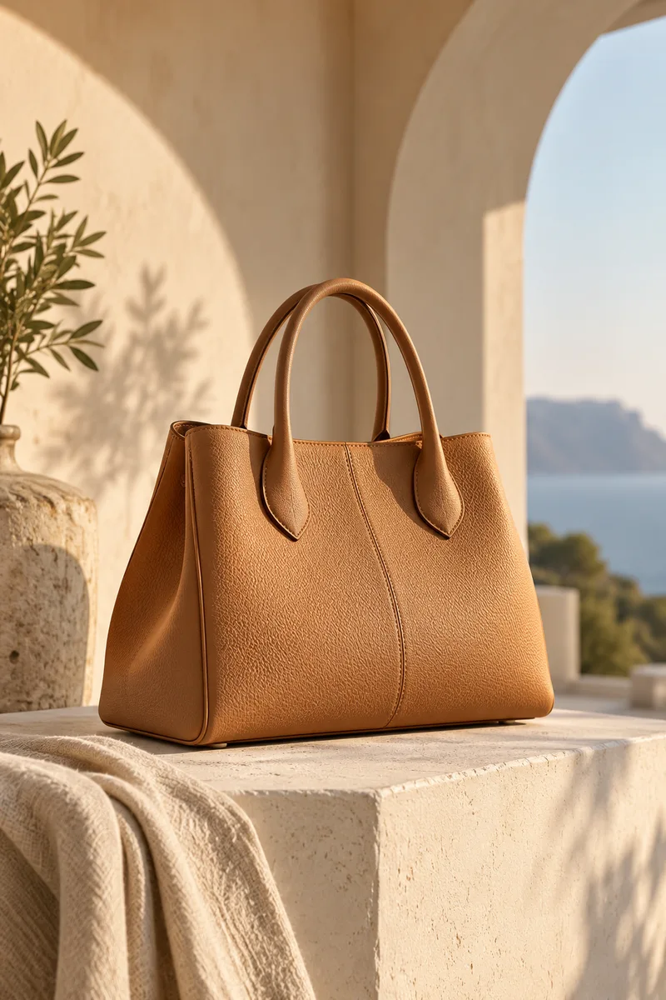
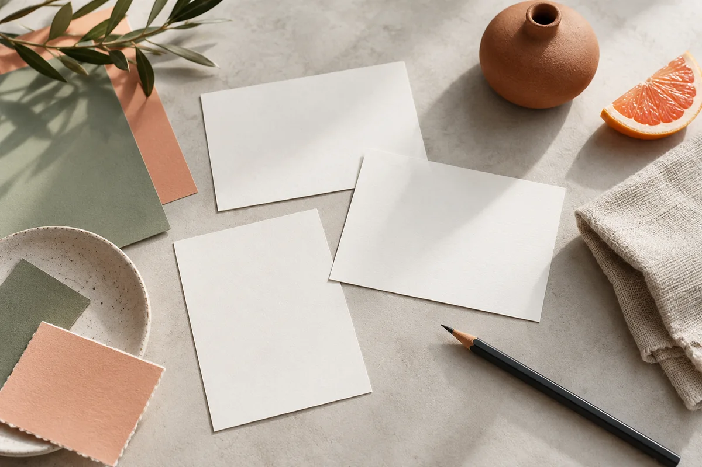
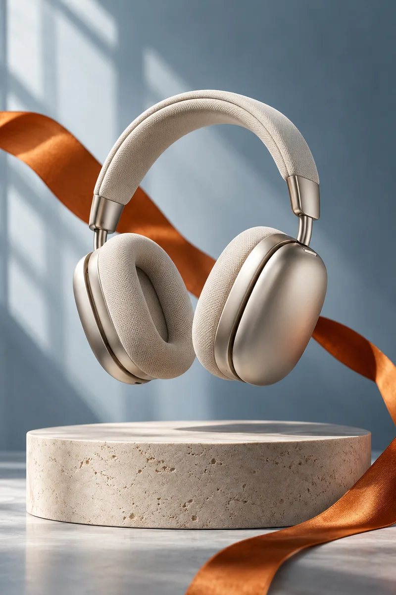

商品、创意与广告制作的实用指南。
从商品参考图到镜头节奏，把电商视频的每一秒用在真正重要的信息上。
6 篇文章

角度、光线、包装与细节，四个步骤整理好你的商品素材。
从日常生活出发，让产品内容与真实使用需求相连接。
在变化的创意里保留视觉锚点，建立有辨识度的系列内容。

商品主体、场景、镜头和限制条件，构成一份可执行的创意说明。

从视频选帧到上传封面，把你的创意整理成更容易复用的模板。